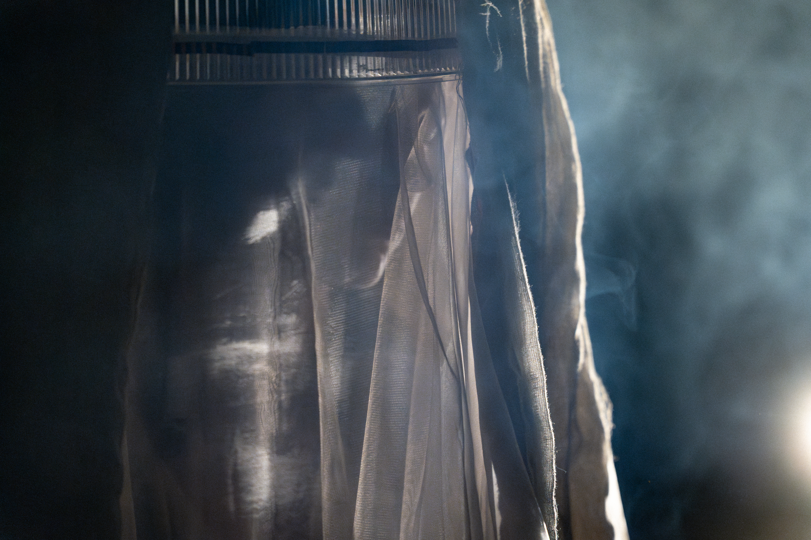
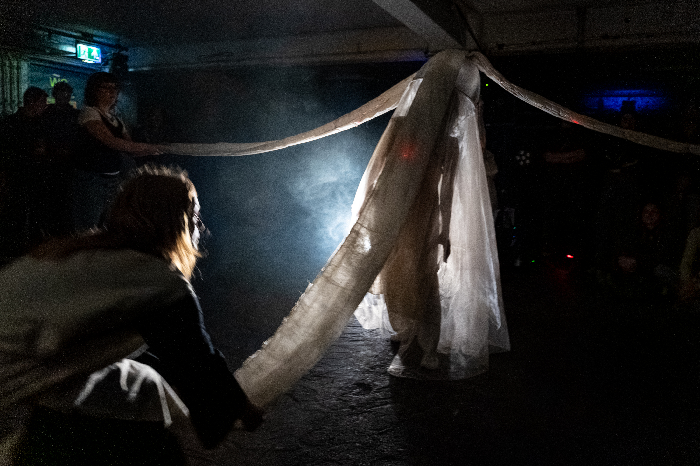
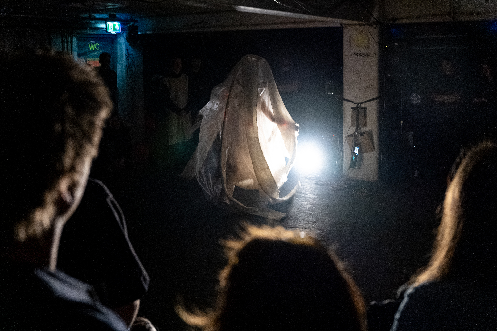
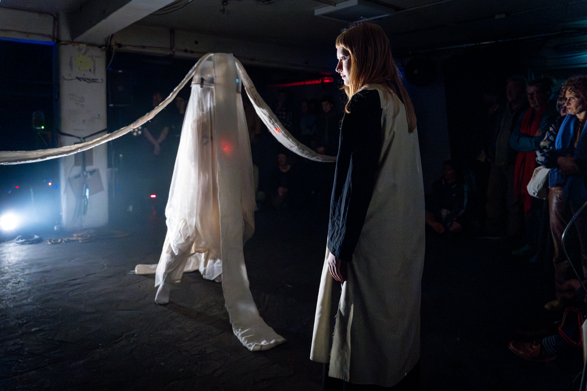

Devosek is the performance by Atser Damsma, Demi van Kuijk & Maisie Palmer. This project is an exploration of movement, textiles, and costume, brought together in a ritualistic framework.
"We wanted the performer to be seen, yet partly veiled, becoming a character that is both themselves and something else. Like in folk traditions or dragon dances, the audience suspends disbelief and accepts the figure as its own entity, not just a person. We wanted to play with that transformation.” — Maisie Palmer



